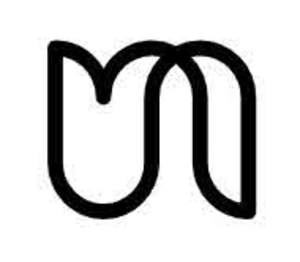

Trade Mark Journal No.2025/015 11 April 2025
UK00004178486 24 March 2025 (9,35,44)

- Class 9
- Scheduling software; Software and applications for mobile devices; Business technology software; Computer software relating to massage, healthcare and beauty services; Software; Computer programmes for data processing; Office and business applications; Reservation systems software; Mobile applications for booking appointments.
- Class 35
- Advertising by transmission of on-line publicity for third parties through electronic communications networks; Search engine marketing services; Distribution of advertising, marketing and promotional material; Loyalty, incentive and bonus program services; Marketing the goods and services of others; promoting and offering the services of others via a website; Internet marketing; Influencer marketing; Arranging and conducting of promotional events; Search engine optimization for sales promotion; Business administration and management; Provision of business and commercial contact information via the Internet; Outsource service provider in the field of customer relationship management; Business administration services for processing sales made on the internet; business intermediary services for connecting customers to service providers in the field of health and wellbeing; Providing user reviews for commercial or advertising purposes; Provision of an online marketplace for buyers and sellers of goods and services; Appointment scheduling services [office functions]; Confirming scheduled appointments for others; Appointment reminder services [office functions]; comparison services enabling consumers to conveniently view and compare the services of others; Advertising, marketing and promotional consultancy, advisory and assistance services; voucher schemes; Presentation of companies and their goods and services on the Internet; Staff recruitment; Staff recruitment consultancy services; Placement of staff; Personnel management and employment consultancy.
- Class 44
- Massage services; beauty therapy treatments; Manicure and pedicure services; Physiotherapy; Osteopathy; Cosmetic facial and body treatment services; Personal hair removal services; Beauty treatment services especially for eyelashes and eyebrows; Vitamin drips; Anti wrinkle treatments; Dermal fillers; Skin tightening; Laser hair removal; Dermaplaning; reservation and booking of health and therapy services.
Urban Massage Ltd
Representative: Mohun Aldridge Sykes Limited